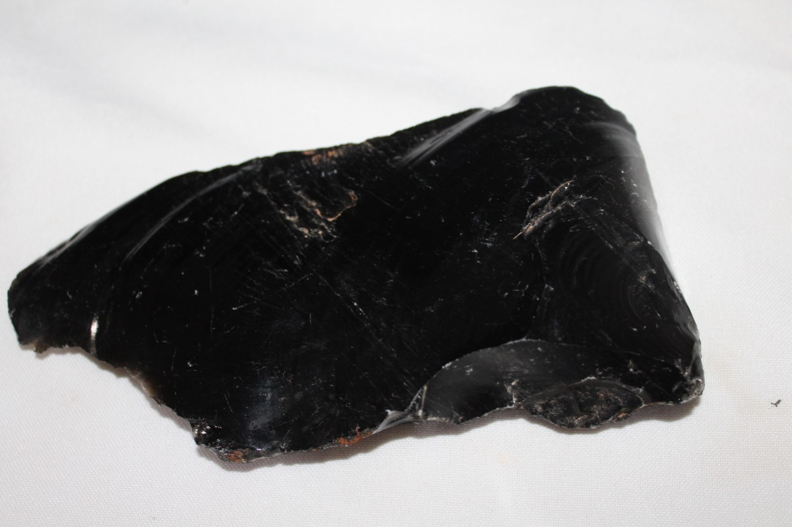
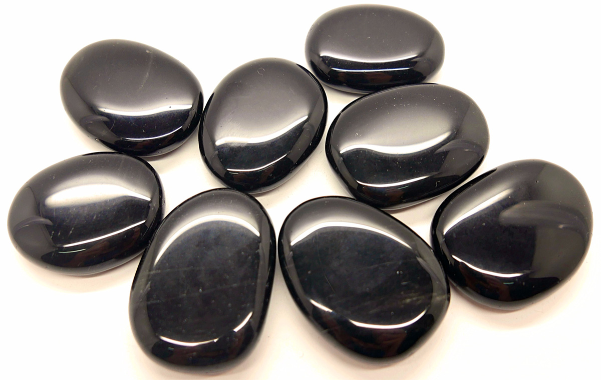

Obsidiana Negra
Significado
A Obsidiana Negra é uma pedra muito forte e especial formada pelo esfriamento rápido da lava Vulcânica.
É uma pedra de aterramento que nos conecta ao centro da Terra e assim dissolve todas energias negativas.
Esta pedra cria um escudo capaz de bloquear e quebrar ataques de magia negra, olho gordo e inveja.
Ela trabalha na cura da alma, acalma a mente, estimula o sucesso e fortalece os trabalhos Xamânicos.
Efeitos Terapêuticos
A Obsidiana Negra é uma pedra excelente para desintoxicar os órgãos, facilitar a digestão e desfazer bloqueios e tensões nos corpos físicos e espirituais.
A Obsidiana Negra é uma pedra excelente para desintoxicar os órgãos, facilitar a digestão e desfazer bloqueios e tensões nos corpos físicos e espirituais.
Se colocada sobre o terceiro olho (centro da testa), ajuda a romper barreiras mentais, fortalece a energia da mente e ajuda equilibrar as emoções e curar o espírito.
← Voltar